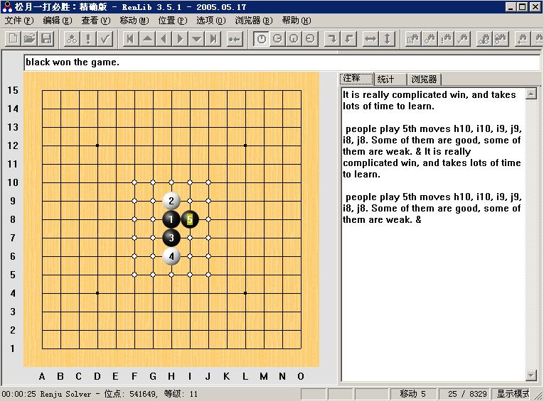
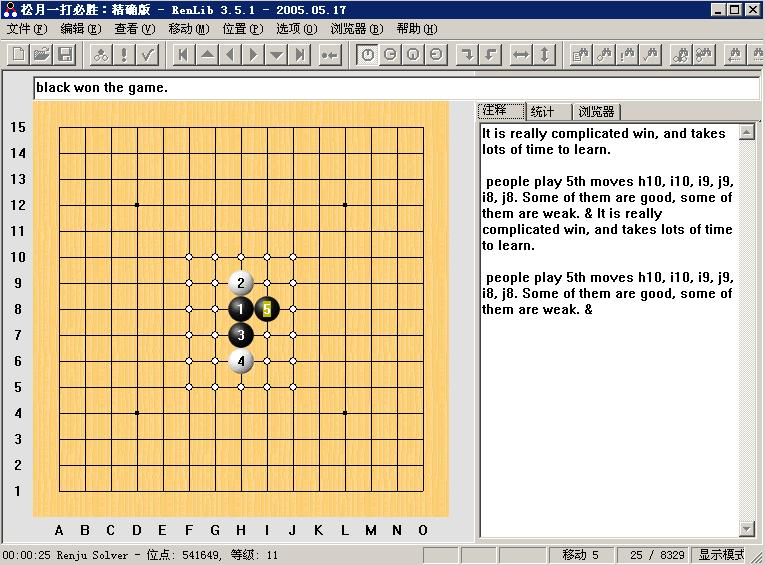

松月一打必胜谱
#1 松月一打必胜谱作者：刀学生 发表时间：2009-5-16 15:51:40
本站虽然发过但是连接损坏了 松月一打必胜：精确版.rar
松月一打必胜：精确版.rar［ 失落刀 于 2009-5-16 15:58:23 时奖励此帖[金币加 20 威望加1］
［ 茗弈小刀 于 2009-5-16 23:19:45 时花20金币送鲜花一朵］
#2 Re:松月一打必胜谱作者：失落刀 发表时间：2009-5-16 15:59:12
大哥，上传个人头像，威望不够出此上策的吗？#3 Re:松月一打必胜谱作者：刀学生 发表时间：2009-5-16 16:01:20
是啊 准备再发个名月一打#4 Re:松月一打必胜谱作者：失落刀 发表时间：2009-5-16 16:02:27
 快整外溪月吧。
快整外溪月吧。#5 Re:松月一打必胜谱作者：刀学生 发表时间：2009-5-16 16:03:41
整不出来 
#6 Re:松月一打必胜谱作者：自来水 发表时间：2009-5-16 19:19:40
有点假,“本站已有发过”……话说LZ这个我目前也接不上。。。#7 Re:松月一打必胜谱作者：刀学生 发表时间：2009-5-16 19:23:50
这东西对楼上还有价值嘛 给新人看的。我测试可以下载，有志发的不能下 ，游戏人间发的刚才才发现。我的也不是地毯谱，外国的老谱了。
#8 Re:松月一打必胜谱作者：刀学生 发表时间：2009-5-16 19:25:27
日 ，我回家后自己电脑居然能下有志发的了 。
补个名月一打
名月1打通山月4终结..rar#9 Re:松月一打必胜谱作者：自来水 发表时间：2009-5-16 19:38:04
神奇……名月一打就可以开……不过只有一个5是怎么搞得，。，。（虽然我也不需要）
#10 Re:松月一打必胜谱作者：刀学生 发表时间：2009-5-16 19:40:29
网站不稳定123#11 Re:松月一打必胜谱作者：茗弈小刀 发表时间：2009-5-17 16:12:11
新月2打能整出来不？#12 Re:松月一打必胜谱作者：忧郁的双眼 发表时间：2009-5-17 16:39:17
新月二打有终结走势
但没谱
#13 Re:松月一打必胜谱作者：茗奕的飞猪 发表时间：2009-5-18 12:20:37
学习了，谢谢楼主